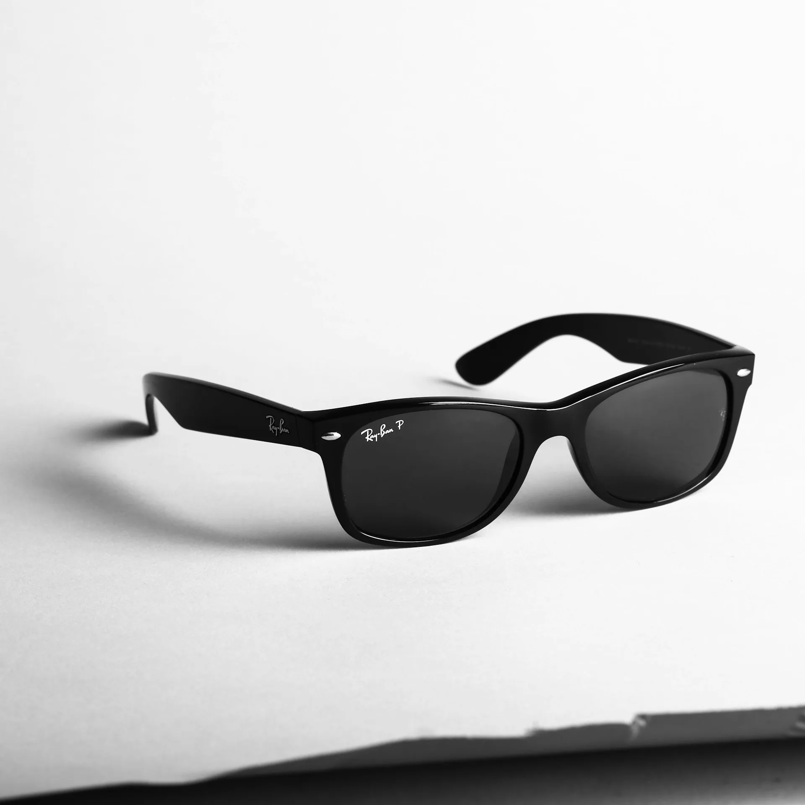
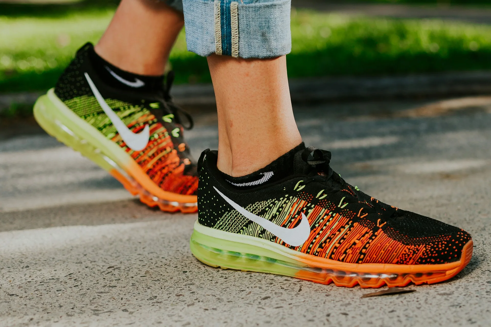
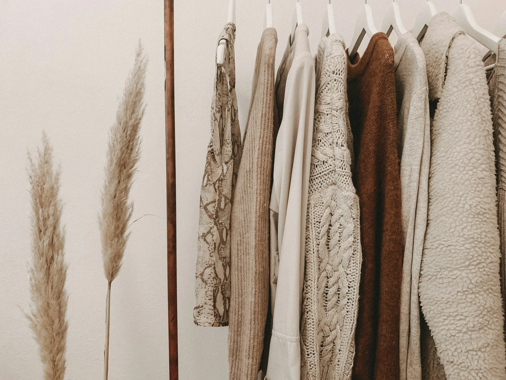

Our process is dictated by the material, not the calendar. We do not rush the drying of timber to meet a deadline. We do not shortcut the fitting of a joint to save a day. A commission from Arboris Studio takes the time it needs to take.

We begin with conversation. Thomas visits your home, takes measurements, and discusses how you inhabit the space. We want to understand your daily rituals — where you sit, how you move, what you need from your furniture.
Initial visits are complimentary for clients within 60 miles of our Shropshire workshop. For those further afield, a £200 consultation fee applies, redeemable against any commission.

You are invited to our timber yard to select the specific boards that will become your piece. We lay out the candidates together — no board is chosen without your agreement. The exact plank that becomes your table top is chosen by you.
We hold stock of over 40 hardwood species at any time. We also accept commissions using client-supplied timber, including salvaged wood with personal significance.

Freshly milled or purchased timber must acclimatise to its new environment. We air-dry in our seasoning store before kiln-finishing to the correct moisture content for furniture making — typically 8–10% for a heated interior.
This stage often accounts for 4–8 weeks of the lead time. It cannot be shortened without compromising the long-term dimensional stability of the piece.

We use traditional hand-cut joinery throughout — mortise-and-tenon, wedged through-tenons, dovetails, bridle joints. Each joint is fitted, adjusted, and refitted until it closes without daylight. Only then do we proceed to glue-up.
No screws are used in structural positions. No pocket-hole jigs, no cam locks. The furniture must hold itself together — glue and geometry, as it has been done for three centuries.

We sand progressively from 80 to 400 grit, raising the grain between coats. Our standard finish is multiple applications of natural Danish oil, hand-rubbed between coats. For pieces needing greater durability, we use a hardwax oil or shellac-based system.
All finishes are natural, food-safe, and repairable. Unlike lacquer, they can be spot-repaired without stripping the entire surface — an important consideration for pieces designed to last a lifetime.

Every piece is delivered and installed by Thomas personally. We carry the piece through your home ourselves — no couriers, no sub-contractors. Once in position, we level, adjust, and demonstrate care procedures.
You receive a written care guide tailored to your specific piece and finish, plus a maker's mark card documenting the timber species, harvest origin, and date of completion.
Open-grained with beautiful medullary rays. Extremely durable. Works beautifully with oil finishes that bring out its warm character. Our most requested species.
Dark, rich, and supremely stable. Walnut's straight grain machines cleanly and carves beautifully. A natural choice for refined dining and bedroom furniture.
Highly figured, with an interlocking grain that gives spectacular visual depth. Each board is unique. Only available in reclaimed form due to Dutch Elm Disease.
Pale at first, cherry deepens over time to a rich reddish-brown. A living finish that improves with age and light. Ideal for pieces in sun-lit rooms.

Our commitment to sustainability is not a marketing position — it is a foundational principle. We source only from sawyers and foresters we know by name, whose land management we have witnessed firsthand.
For every commission completed, twelve trees are planted in collaboration with the Woodland Trust.
We welcome serious enquiries. Current lead time is 16–24 weeks. We take on 12–14 commissions per year.
Send an Enquiry